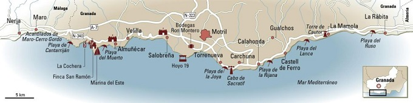
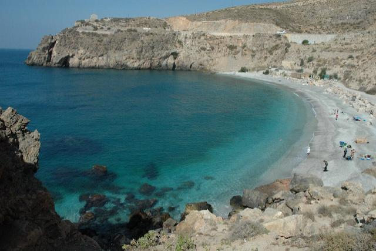
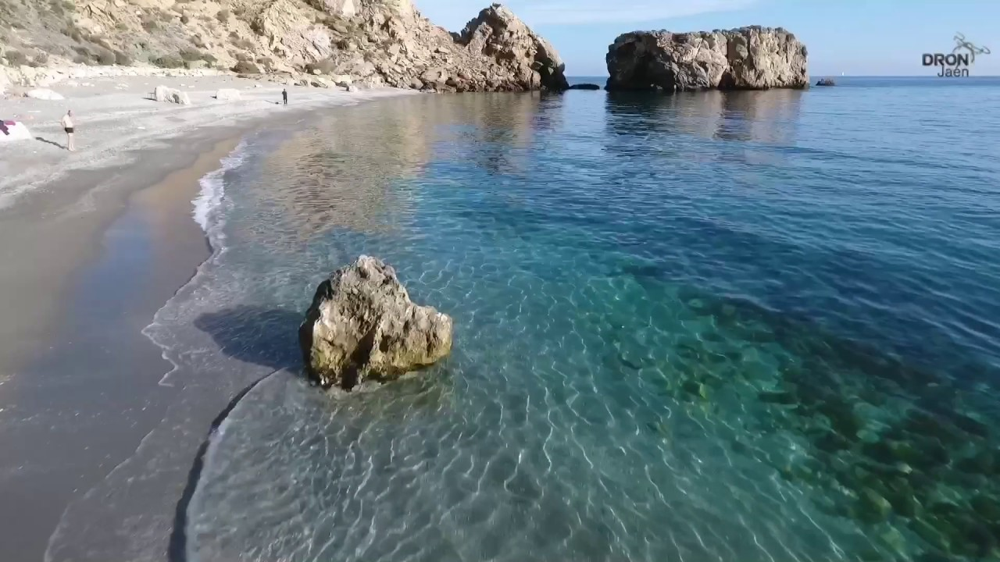

Save The Plants


¿Qué nos ofrece la costa?
Calas pequeñas y tranquilas
Junto a las playas de estas localidades hay infinidad de pequeñas y tranquilas calas ubicadas en Albuñol, Castell de Ferro-Gualchos y La Mamola-Polopos. Muy cerca se encuentran los municipios de Albondón, Ítrabo, Jete, Lentejí, Los Guájares, Lújar, Molvízar, Murtas, Otívar, Rubite, Sorvilán, Turón y Vélez de Benaudalla, rodeados de naturaleza exuberante.

Golf, parapente, senderismo...
Además del mar y la cultura, la Costa Tropical ofrece infinitas posibilidades, como golf, parapente, senderismo en los pueblos ubicados en el interior, buceo en los ricos fondos de Cerro Gordo y deportes acuáticos, que tienen su centro en el puerto deportivo de Marina del Este (Almuñécar) y en el Motril Yacht Club.Las frutas tropicales se pueden saborear en ensaladas o postres, en una comida que no puede dejar de ver los pescados de roca como el pargo y la dorada y los mariscos como el camarón. Y con el café, el ron de caña que también se elabora en la zona.

Mapa con las Costas de la provincia de Granada
Playas y sus características
| Playa | Caracteristicas | Foto |
| Playa del muerto | La Playa del Muerto es una tranquila, aislada y pintoresca playa nudista situada en la costa de Almuñécar.Esta playa de aguas calmadas y cristalinas se encuentra entre la Punta de San José y el Peñón del Lobo.Está formada por una playa principal y una pequeña cala, que están conectadas entre si por una senda peatonal. La playa del Muerto no cuenta con paseo marítimo, y el acceso a ella se realiza a través de unas pasarelas instaladas en las rocas al final de la Playa del Cotobro. |  |
|---|---|---|
| Playa de la Guardia en Salobreña | Rodeada de cultivos agrícolas y cañaverales en su mayor parte, con el Peñón en un extremo y apartamentos en el otro, tiene una extensión de poco más de 1km y una anchura de 25 metros. |  |
| Playa de Calahonda | La playa de Calahonda está ubicada en el municipio malagueño de Mijas, entre el Puerto de Cabopino y la playa de El Bombo. Situada frente a la urbanización con la que comparte nombre, en la playa de Calahonda podemos observar diferentes zonas: desde las más urbanizadas con viviendas y establecimientos cercanos, hasta las más vírgenes con abundante vegetación. |  |
| Playa de la Rijana | La playa de la Rijana está situada en la provincia de Granada, a las afueras de la localidad de Castell de Ferro, a unos 20 km al este de Motríl. Esta playa de arena oscura, ofrece unas aguas excepcionalmente limpias, siendo un lugar ideal para los buceadores o simplemente para hacer un poco de snorkel. |  |